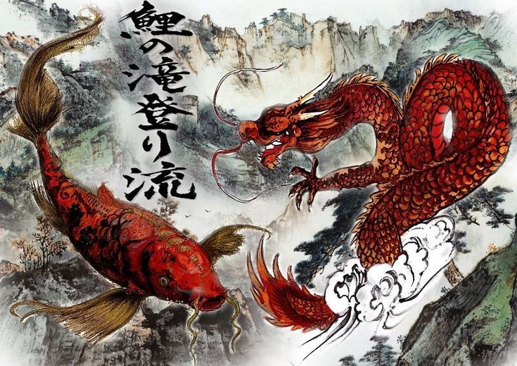

Nuestra historia
El Kung Fu se remonta a la sociedad primitiva, adquiriéndose los movimientos propios de la caza. Sin embargo, su origen se data en el año 527, cuando un monje budista que procedía de la India, llamado Bodhidharma, visitó el monasterio de Shaolin. Allí fue donde les mostró al resto de monjes 18 movimientos para poder tener una buena salud, conocidos como “18 LuoHan”, que más tarde derivó en 24 movimientos. A partir de la Dinastía Tang, el Kung Fu se fue incorporando en diferentes países asiáticos, derivando en otras artes marciales como el kickboxing, kárate, judo o aikido. Tras la fundación de la República Popular China, los maestros del Kung Fu migraron a ciudades como Hong Kong o Taiwán para poder desarrollar sus conocimientos. Durante la Revolución Cultural de China, los Guardias Rojos destruyeron cualquier tipo de tradición china, produciéndose un cambio radical de las artes marciales y vinculándose a la vertiente maoísta. Se creó la Comisión de Cultura Física y Deportes del Estado para poder controlar las diferentes artes y deportes. Es entonces cuando surge el Wushu, con movimientos adaptados del kung-fu tradicional. En el resto del mundo, se popularizó a partir de los años 70 gracias a películas de Hollywood.